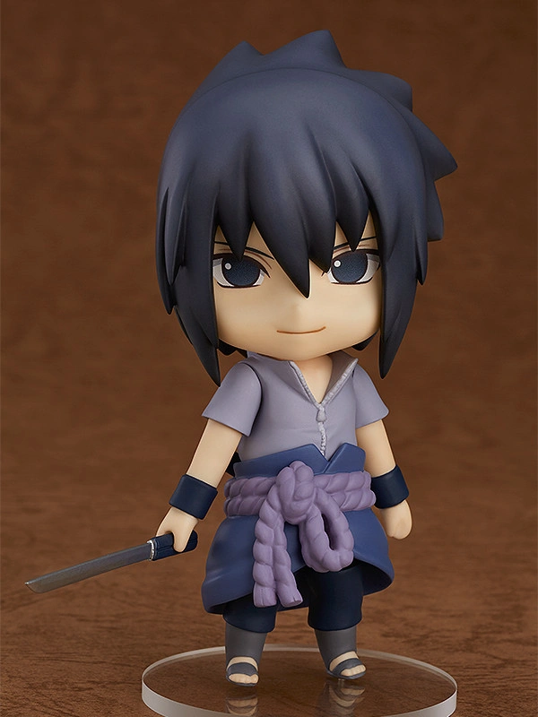

Shikamaru Nara (奈良シカマル, Nara Shikamaru) is a shinobi of Konohagakure's Nara clan. Though lazy by nature,
Shikamaru has a rare intellect that consistently allows him to prevail in combat. The responsibilities that these successes leave
him with cause him frequent annoyance, but he gladly accepts them so that he may be of service to his fellow members of Team Asuma,
and to prove himself to generations of the past and future.


From the popular anime "Naruto Shippuden" comes a Nendoroid of Shikamaru Nara! He comes with three
face plates including a standard expression, a crying expression and a lazy expression.
Optional parts include a lighter and shadow parts to recreate Shikamaru's signature technique.
Using the included parts, you can recreate scenes of Shikamaru in combat as well as the classic running pose.
Be sure to display him with all the characters from the Naruto Nendoroid Series!.